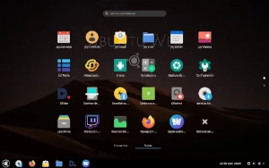
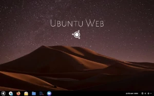

Caesarex 's Website
Software, Tutoriales, y más ...
Software, Tutoriales, y más ...
Blog
Ubuntu Web Remix - La alternativa a Chrome O.S.
En meses recientes ha causado revuelo la noticia de que los desarrolladores del Sistema Operativo basado en linux mas usado en el mundo, me refiero a Ubuntu, están por lanzar un nuevo proyecto que pretente entre otras cosas ser la mejor alternativa a Chrome O.S. de Google.
 Si aún no estás familiarizado con estos sistemas operativos te dejo un breve resumen: Chrome O.S. es un sistema operativo al igual que Windows 10, Ubuntu, Mac O.S., etc; pero que tiene la particularidad de ser mucho mas ligero que los antes mencionados, y eso se debe en gran parte a sus funcionalidades. Chrome O.S. está diseñado para trabajar en entornos que requieren pocos recursos de hardware y donde los usuarios pueden trabajar con aplicaciones ligeras que generalmente funcionan en la nube, es decir, con servicios en Internet. Los usuarios pueden revisar su correo electrónico, redes sociales, ofimática, multimedia, etc. Además es compatible con aplicaciones para Android. Básicamente es una computadora para tareas de oficina y entretenimiento, nada mas.
¿Qué ventajas y desventajas presenta?
Las ventajas de tener un sistema operativo de este tipo son: Rapidez en el sistema, larga duración en la la batería de los portátiles, infinidad de aplicaciones compatibles, y simpleza en su uso. Sin embargo las desventajas también existen. Es prácticamente inutil utilizar este sistema si te dedicas a la edición de audio y videos, diseño gráfico, programación, videojuegos, etc. Y la mas grande desventaja es que no sirve para mucho cuando no esta conectada a Internet.
Durante varios años Chrome O.S. ha sido el rey en sistemas operativos de este tipo. Sin embargo parece que Linux nos presenta ahora una alternativa gratuita a todos los usuarios de clientes ligeros que necesitamos un sistema rápido para navegar en internet y redes sociales y que haga que nuestra batería dure mucho mucho más. Ubuntu Web es una distribución no oficial de Ubuntu Remix del mismo desarrollador Rudra Saraswat
Características Principales
Por supuesto, al ser un sistema de código abierto, usará como navegador web predeterminado: Mozilla Firefox, en lugar de Google Chrome de Chrome O.S. y cuenta con una Open Web Store oficial pero experimental para descargar aplicaciones web empaquetadas. Una vez que descargado el paquete, se instala por línea de comandos (lo que puede ser una desventaja para usuarios nuevos en linux). Al igual que su competencia contará con la herramienta Ambox para instalar y ejecutar aplicaciones en Android.
Sabemos que en un inicio no será un sistema tan bueno como queremos que sea, pero Linux en un principio tampoco lo era. Lo mas importante es darle una oportunidad a las nuevas alternativas, que además de todo son gratuitas y que en unfuturo se pueden convertir en una herramienta indispensable para los usuarios de oficina, los que necesitamos un sistema rápido, estable, y que aproveche al máximo el hardware disponible en nuestros equipos.
Si deseas hecharle un vistazo a esta nueva distro, bájatela del siguiente link: Descargar
Autor: Caesarex - 01 de Diciembre de 2020
<- Siguiente Post Post Anterior ->